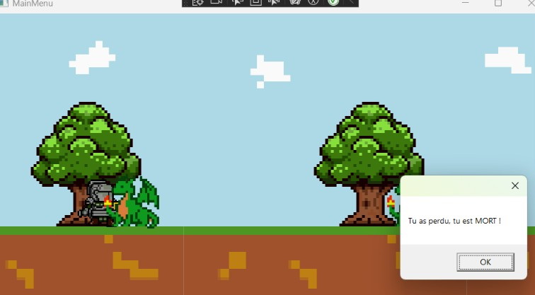
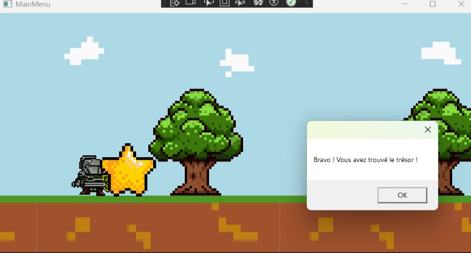

Jeu développé en C# avec interface graphique.


Knight Adventure est un jeu 2D développé en C# dans le cadre d'une SAE. Le projet consistait à concevoir un personnage jouable, gérer ses déplacements et intégrer une logique d’ennemis. L’interface graphique a été réalisée en WPF, avec une gestion des sprites, des animations et des interactions utilisateur. Le projet m’a permis de travailler sur la structure d’un jeu, la boucle de mise à jour, la gestion des événements et l’organisation du code en classes cohérentes.